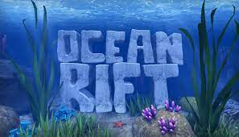
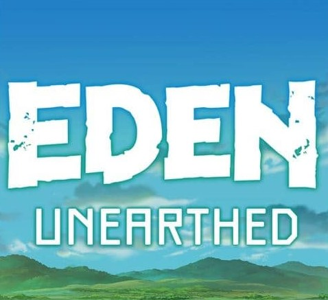
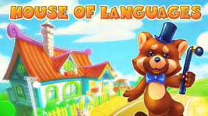

Hier vindt u een paar filmpjes van het bedrijf en ook één filmpje over onze tijd bij gamescom, wie niet weet
wat gamecom is of graag meer informatie wil kan dit vinden door hier te klikken. de overige 3 filmpjes laten zien hoe wij games testen en hoe wij
inspiratie krijgen tot onze games, bijvoorbeeld door objecten of door kledij. Verder vindt u enkele
realisaties waar wij als team ontzettend trots op zijn dat wij deze hebben kunnen ontwikkelen. Wat u
misschien opvalt door het bekijken van deze pagina is u vast opgevallen dat het vooral over virtual reality
gaat, dat is helemaal juist wij geloven echt in dat concept en willen graag ontdekken wat er nog allemaal
mogelijk is met virtual reality.
Ocean Rift

Ocean Rift biedt een andere ervaring, ditmaal betreft het een live computeranimatie.
De student zwemt virtueel onderwater met vrijheid van beweging en kan diverse vissen en andere dieren
van dichtbij bekijken. Hoewel er veel aandacht is besteed aan realisme zijn er ook enkele speelse
elementen aan toegevoegd, zoals ringen werpen waar dolfijnen doorheen zwemmen.
Let wel op voor de grote haai, wanneer je niet in de kooi blijft kan dit nare gevolgen hebben! Deze
toepassing is vooral geschikt als aanvulling op een biologieles. Wilt u graag meer informatie over deze
game klik dan hier.
Eden Unearthed

Het spel (en de anime waaraan het gerelateerd is) speelt zich af in de verre toekomst, in een wereld
zonder mensen, uitsluitend georganiseerd door robots. Je bestuurt een futuristische motorfiets en rijdt
door een uitgestrekt en veranderend landschap, waarbij je appels verzamelt als brandstof en obstakels
ontwijkt om je snelheid te maximaliseren zonder ergens tegenaan te botsen. Op verschillende punten langs
de baan stop je naast een oriëntatiepunt en ontvang je een korte uitbarsting van vertelling om het
verhaal verder te brengen, naast beelden op een klein draagbaar scherm van je fiets. Deze game is
ontwikkeld en gerealiseerd door ons bedrijf en de fijne samenwerking met netflix. Wilt u graag meer
informatie over deze game klik dan hier.
House Of Languages

Dit is een typisch voorbeeld van spelenderwijs leren. De leerling stapt virtueel in het huis van Mr Woo
en kan op zoek gaan naar een groot aantal objecten. Er zijn twaalf locaties met ieder een flink aantal
objecten die in de Engelse, Duitse of Spaanse taal worden omschreven en uitgesproken. Daarmee kan het
vocabulaire verbeterd worden. Het is bedoeld als ondersteunend middel, het is geen volwaardig educatieve
titel. Naast vocabulaire wordt er verder ook geen aandacht besteed aan grammatica. Toch is het een
leerzame app die zeer laagdrempelig is om te spelen en kinderen zal motiveren om hun woordenschat uit te
breiden. Wilt u graag meer informatie over deze game klik dan hier.